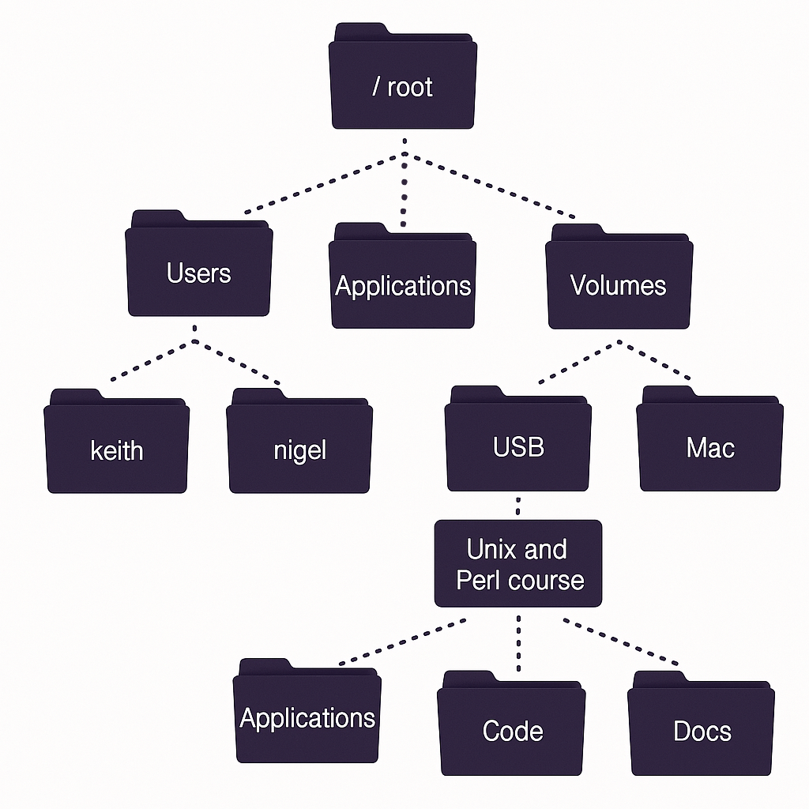
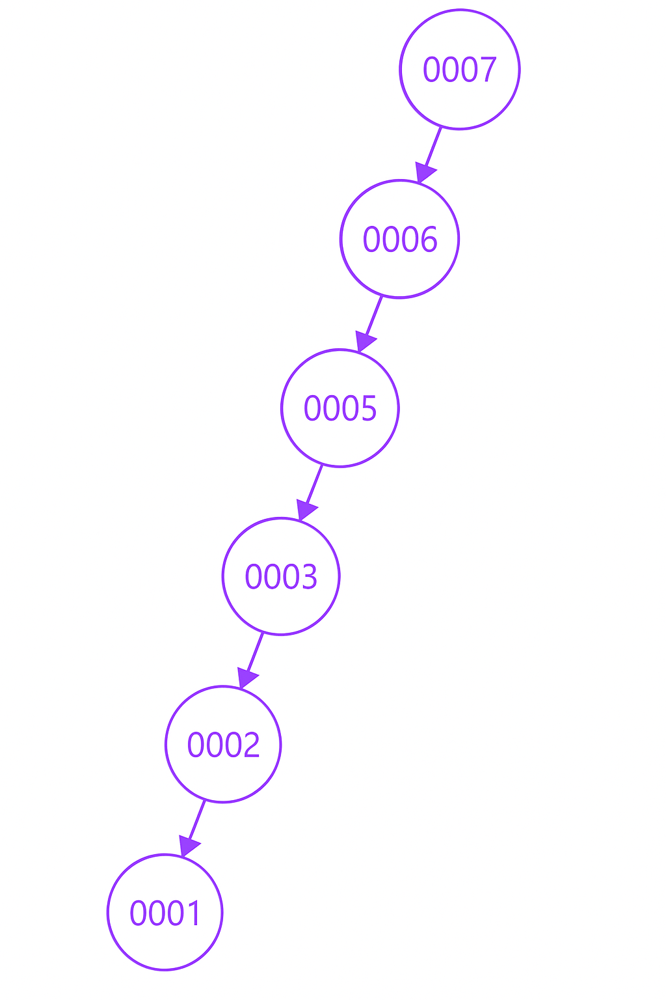

Análises de estruturas de dados através de Benchmark
Introdução
Este GitHub Pages contém a entrega do Grupo 5, formado por: Anthony Willy Miranda Pereira, Maria Eduarda Viana Cordeiro dos Santos, Matheus Adiel Medeiros Lima de Oliveira, Natan Hugo Carvalho Evangelista e Tamires Santiago Oliveira, na disciplina Estruturas de Dados e Algoritmos (EDA/LEDA), sob orientação do Professor João Arthur Brunet, na Universidade Federal de Campina Grande (UFCG).
O trabalho tem como objetivo comparar o desempenho de diferentes estruturas de árvore, como B-Tree, Splay Tree e TreeMap (Java), utilizando a ferramenta JMH (Java Microbenchmark Harness) para benchmarks de desempenho. Para simular diferentes cenários de uso, foram utilizados scripts em Python para geração automática de cargas de dados, e, após os testes, foi realizada uma análise detalhada para entender os fatores que influenciaram o desempenho de cada estrutura.
Metodologia Geral
Considerando as diversas estruturas de dados avançadas que não são abordadas na disciplina de Estrutura de Dados na Universidade Federal de Campina Grande (UFCG), o objetivo deste projeto é analisar, comparar e catalogar estas estruturas em Java:
- B-Tree
- TreeMap
- Splay Tree
Para a análise, comparamos os seguintes aspectos:
- Tempo de leitura, escrita e acesso de todos os elementos;
- Tempo de leitura, escrita e acesso de apenas um elemento;
Para medir com precisão o tempo de execução das operações, utilizamos o JMH (Java Microbenchmarking Harness), uma ferramenta especializada em microbenchmarks para Java. Com ela, conseguimos avaliar o desempenho das operações descritas anteriormente de forma confiável.
Durante os testes, o JMH executa o método de benchmark repetidamente ao longo de um intervalo de tempo pré-definido, neste projeto, 5 segundos por iteração. Ao final desse período, é calculada uma média do tempo necessário para a execução da operação. Se a operação for pesada demais para ser concluída dentro desses 5 segundos, o JMH ainda a executa até o fim, registrando o tempo de uma única execução.
Para garantir maior precisão nos resultados, mesmo em operações mais custosas, estipulamos um mínimo de 50 iterações por benchmark. Ao final, é calculada a média do tempo de execução considerando essas 50 iterações. A titulo de informação adicionamos a velocidade de alocação de mémoria por segundo de cada operação, porém não é foco do estudo e não será aprofundado.
As cargas são geradas utilizando a biblioteca random do Python com uma seed (número qualquer que escolhemos). O script gera as cargas na pasta data em um arquivo .csv de apenas uma coluna de dados sintéticos. São gerados 4 arquivos: um de dados ordenados e com repetições, ordenados sem repetições, desordenados com repetição e sem repetição. Cada arquivo tem 10⁶ dados sintéticos.
Os testes de estresse da máquina foram executados no terminal em uma máquina do LCC da UFCG, usando diferentes cargas nas três estrutura, variando entre 10⁵ e 10⁸, observando os erros de memória e o tempo de execução. Portanto, foi chegada à conclusão de que para as três estruturas, 10⁶ possibilitou um bom tempo de execução com uma boa quantidade de elementos.
Árvores
Antes de focarmos nas árvores escolhidas para a análise, devemos entender a importância dessas estruturas para computação. Em programação, árvores se referem à estruturas hierárquicas para armazenamento de dados. Diferentemente das listas que possuem acesso sequencial, as árvores são organizadas de forma ramificada, composta por nós que são conectados por arestas, por isso são denominadas estruturas não-lineares. Cada nó pode ter um ou mais filhos, mas apenas um pai, com exceção da raiz da árvore, que não tem pai. No mundo real esta estrutura é bastante utilizada quando temos uma relação de nível entre os elementos como por exemplo: estruturas de pastas de um sistema operacional, interfaces gráficas e bancos de dados.
BTree
A B-Tree é uma árvore auto-balanceada, projetada para gerenciar grandes volumes de dados com eficiência, especialmente em sistemas de armazenamento. Ela evoluiu a partir das árvores de busca binária (BSTs) e das árvores balanceadas (como AVL e Red-Black Trees), combinando a organização ordenada das BSTs com o nivelamento de altura das árvores balanceadas. Diferente dessas estruturas, a B-Tree expandiu seu funcionamento ao permitir que cada nó contenha múltiplas chaves e múltiplos filhos, tornando-a ideal para aplicações que exigem operações rápidas de busca, inserção e remoção em grandes conjuntos de dados.
Propriedades:
- A BTree possui um valor t chamado de ordem da árvore, que define a quantidade mínima de chaves que um nó pode possuir, sendo esta t-1 chaves.
- Na BTree, cada nó possui um atributo booleano que verifica se ele é uma folha ou não. Caso ele seja uma folha, não possuirá filhos. Caso não seja, seu número de filhos será determinado pela ordem da árvore, onde seu número mínimo de filhos será t e o máximo t*2, com exceção da raiz que só poderá ter no mínimo 2 filhos.
- Se um nó excede o número máximo de chaves, ele é dividido (split).
- Se um nó fica com menos chaves do que é permitido, ele pode ser fundido (merge) com outro.
Operações:
⭢ Inserção:
A inserção de uma chave em uma B-Tree é feita de forma a manter a estrutura balanceada, o que pode envolver a divisão de nós e a promoção de chaves para o nó pai, se necessário.
- Comece com a busca pela posição adequada para a chave.
- Se a árvore estiver vazia, aloque um nó raiz e insira a chave.
- Se não estiver vazia, encontre o nó folha onde a chave deve ser inserida:
- Se o nó não estiver cheio, insira a chave nesse nó e a árvore permanece balanceada.
- Se o nó estiver cheio, o nó é dividido ao meio:
- A chave do meio é promovida para o nó pai;
- O nó é dividido em dois nós filhos, cada um com metade das chaves;
- Se o nó pai também estiver cheio, o processo de divisão pode se propagar recursivamente até a raiz.
- Caso a divisão atinja a raiz, uma nova raiz é criada, aumentando a altura da árvore.
⭢ Remoção:
- Comece com a busca pela posição da chave que será removida.
- Quando encontrar o nó onde a chave que deve ser removida se encontra:
- Se o nó for uma folha:
- Se não ferir a propriedade de número mínimo de chaves, basta remover a chave.
- Se violar, o nó pegará uma chave do nó irmão imediato da esquerda para a direita, para que se mantenha com a quantidade mínima de chaves.
- Se os nós irmãos também tiverem a quantidade mínima de chaves, os nós serão fundidos.
- Se o nó não for uma folha:
- Se o filho à sua esquerda tiver mais que o número mínimo de chaves, a chave a ser excluída será substituída pelo seu antecessor imediato.
- Se o filho à sua direita tiver mais que o número mínimo de chaves, a chave a ser excluída será substituída pelo seu sucessor imediato.
- Se ambos os filhos tiverem o número mínimo de chaves, os nós filhos serão fundidos.
- Caso os filhos e os irmãos estiverem com o número mínimo de chaves, fundimos o nó com o irmão e com alguma chave do pai, dessa forma a altura da árvore diminui.
⭢ Busca:
Procurar um elemento em uma BTree é uma forma generalizada da busca em uma BST.
- A busca começa no nó raiz da árvore percorrendo as chaves ordenadas do nó. Se a chave procurada for encontrada no nó atual, a busca termina com sucesso. Se a chave não for encontrada, determinar qual dos filhos deve ser explorado:
- Se a chave for menor que uma chave existente, a busca segue para o filho esquerdo correspondente.
- Se for maior, a busca segue para o filho direito apropriado.
- Se não encontrar, continuamos descendo na árvore até encontrar a chave ou chegar a uma folha. Se um nó folha for alcançado sem encontrar a chave, significa que ela não está presente na árvore.
Tabela de custo da BTree
| Algoritmo | Caso Médio | Pior Caso |
|---|---|---|
| Espaço | O(n) | O(n) |
| Busca | O(log n) | O(log n) |
| Inserção | O(log n) | O(log n) |
| Remoção | O(log n) | O(log n) |
SplayTree
A estrutura de dados avançada splay tree, ou árvore splay, é uma árvore binária de busca autoajustável, com o adicional de tornar os elementos acessados recentemente, fáceis de acessar novamente. Todas as suas operações básicas, como remoção, inserção e busca, são baseadas em colocar o elemento envolvido nessa operação na raiz, através de rotações (operação splay).
A principal operação da splay tree se baseia em uma sequência de rotações, onde procura deixar junto à raiz os elementos mais usados e recentes. Por consequência, os elementos mais inativos estarão distantes da raiz. Essas rotações podem ser de dois tipos: Rotação simples ou rotação dupla.
A principal vantagem da splay tree está diretamente ligada com o fato dela ser autoajustável. Pois, na medida em que os elementos mais utilizados se movem para próximo da raiz, eles são acessados mais rapidamente e facilmente.
Entretanto, a principal desvantagem é que a altura da splay tree pode ser linear, quando os nós da árvore são acessados sequencialmente em ordem, deixando-a totalmente desbalanceada. Outra desvantagem significativa é que a representação da árvore pode mudar quando nela são realizadas as operações básicas, pois envolvem reestruturação dinâmica. Ou seja, isso torna complicado o uso em um ambiente multi-threaded. Para contornar essa problemática, seria necessário adaptar essa estrutura de dados.
Operações:
Na rotação simples temos a rotação Zig (para direita) e a rotação Zag (para esquerda). Já na rotação dupla, temos a rotação Zig-zig (duas rotações para a direita), Zag-zag (duas rotações para a esquerda) e a Zig-zag ou Zag-zig (rotação direita e esquerda ou esquerda e direita, respectivamente).
- Na rotação Zig, o filho direito do elemento B ficará o filho esquerdo do elemento A, que era pai de B. Com a mesma lógica, na rotação Zag, o filho esquerdo do elemento A ficará o filho direito do elemento B, que era pai de A.
- Já na rotação dupla Zig-zig, são realizadas duas rotações simples do tipo zig. Neste exemplo, para fazer o zig-zig de C, primeiro é realizado o zig no pai de C (que é o B) e posteriormente é feito o zig de C. De forma análoga ocorre a operação Zag-zag, com duas rotações simples do tipo zag.
- Por fim, na rotação dupla Zig-zag, primeiro realiza-se o zig de C com o pai de C (que é o B), e logo após aplica-se o zag de C com o avô de C (que é o A). Já o Zag-zig troca a ordem das operações simples: primeiro o zag e, em seguida, o zig.
Tabela de custo da Splay Tree
| Algoritmo | Caso Médio | Pior Caso |
|---|---|---|
| Espaço | O(n) | O(n) |
| Busca | O(log n) | O(log n) (amortizado) |
| Inserção | O(log n) | O(log n) (amortizado) |
| Remoção | O(log n) | O(log n) (amortizado) |
TreeMap
O TreeMap é uma estrutura que armazena dados no formato chave-valor, ou seja, é possível acessar um elemento por meio de uma chave única. Por exemplo, o acesso a um aluno por meio de seu CPF. O TreeMap implementa a interface SortedMap, que por sua vez herda da interface Map utilizada para mapear valores a chaves.
A interface SortedMap tem como objetivo ordenar as chaves atribuídas a determinados valores (por ordem crescente, alfabética ou qualquer outra ordem definida). Por exemplo, em um sistema de agenda de eventos, é necessário acessar os eventos pelas datas, podendo ordená-los da mais recente à mais antiga. Nesses casos, o TreeMap pode ser extremamente útil ao atribuir uma data como chave e um objeto Evento como valor. Além disso, essa ordenação permite que ele seja usado para estratégias de cache eviction.
O TreeMap está disponível na biblioteca padrão do Java (java.util), mas é importante compreender seu funcionamento interno para fins didáticos. Diferentemente do HashMap, que utiliza funções de hash para localizar chaves em tempo O(1), o TreeMap utiliza uma estrutura baseada em uma Árvore Rubro-Negra para realizar suas operações de inserção, busca, remoção e verificação.
Árvore Rubro-Negra
A árvore rubro-negra é um tipo específico de árvore binária de busca balanceada, caracterizada por regras que mantêm seu balanceamento por meio do uso de cores nos nós (vermelho e preto). A árvore realiza operações em O(log n) mesmo nos piores casos, desde que esteja balanceada.
Propriedades:
- Todo nó é vermelho ou preto.
- A raiz é sempre preta.
- Todas as folhas (nós nulos ou nil) são pretas.
- Ambos os filhos de todo nó vermelho são pretos.
- Todo caminho de um nó até uma folha descendente contém o mesmo número de nós pretos.
Os elementos em um TreeMap ficam ordenados de forma semelhante a uma árvore binária de busca comum. No entanto, sempre que um nó é inserido ou removido, a árvore se reorganiza para manter suas propriedades. Essa reorganização envolve rotações e trocas de cor entre os nós. Isso garante que a árvore continue balanceada e funcional.
Com isso, ao inserir um valor, o TreeMap o posiciona na árvore rubro-negra de forma ordenada com base na chave. Assim, o acesso é feito por meio da chave, e não pelo valor diretamente. A tentativa de acessar pelo valor (sem usar a chave) pode violar a lógica da estrutura e sua eficiência.
Tabela de custo da TreeMap
| Algoritmo | Caso Médio | Pior Caso |
|---|---|---|
| Espaço | O(n) | O(n) |
| Busca | O(log n) | O(log n) |
| Inserção | O(log n) | O(log n) |
| Remoção | O(log n) | O(log n) |
Resultados dos Benchmarks
Para este projeto, selecionamos 6 métodos para análise, aplicados em 3 estruturas diferentes e com 4 conjuntos distintos de dados. Como cada execução foi avaliada em termos de tempo e velocidade de alocação de mémoria por segundo, o total de combinações testadas chegou a 144 resultados. Esses dados foram filtrados e organizados em uma planilha, e a partir dela, foram gerados 48 gráficos no Power BI, categorizados por tipo de operação para facilitar a análise comparativa.
Use o seletor acima para filtrar os resultados por método (como insert, remove, search). As setas na parte inferior do gráfico permitem navegar entre os indicadores de tempo (ms/op) e velocidade de alocação de mémoria (MB/sec).
Análise
Para fins de análise, priorizaram-se os dados mais precisos e que melhor evidenciam as particularidades, vantagens e limitações de cada estrutura em estudo.
Antes de iniciar, é fundamental esclarecer o motivo de não analisarmos os resultados referentes à velocidade de alocação de memória por segundo. Ao executarmos os Benchmarks, geramos também dados acerca do gc.alloc.rate, que representa a quantidade de memória alocada por segundo durante a execução do benchmark. Ela é útil para identificar o volume de objetos criados e o potencial impacto na coleta de lixo (GC) da JVM, porém a JVM pode aplicar otimizações como a eliminação de alocações (escape analysis), que afetam as métricas de alocação. Essas otimizações podem mascarar o comportamento real do código em produção, tornando os dados de gc.alloc.rate menos representativos. Além disso, ela não oferece uma visão completa do comportamento da aplicação, logo para uma análise mais precisa seria necessário considerar outras métricas, como o uso da CPU e a presença do Garbage Collector.
Dito isso, não nos aprofundaremos na análise desses dados, porém mantivemos seus gráficos.
INSERT ALL
Para a operação de inserção de todos os elementos, é possível observar que a presença de repetição e ordenação impacta positivamente no tempo de execução tanto da TreeMap quanto da SplayTree. No caso da TreeMap, a implementação do Java sobrescreve os elementos repetidos, o que reduz significativamente sua altura, pois nos testes com elementos repetidos estamos trabalhando com uma carga de 1 milhão de dados, dos quais 1 a cada 100 elementos são únicos, totalizando 10 mil elementos adicionados na TreeMap. Além disso, a estrutura realiza menos reorganizações e mantém um bom balanceamento quando os elementos são inseridos de forma ordenada.
A repetição nos dados também beneficia o desempenho da SplayTree, pois como a estrutura não aceita elementos repetidos, o tempo de execução é apenas de adicionar a primeira vez, e nas subsequentes ela apenas verifica se já existe, sem precisar adicionar e se reorganizar. É possível observar no gráfico que a SplayTree está com comportamento similar à TreeMap, já que ambas não aceitam elementos repetidos, diminuindo a altura das duas estruturas.
Por outro lado, a BTree apresenta um custo maior na inserção, pois precisa realizar buscas entre todos os seus nós filhos até encontrar o lugar onde o elemento será inserido. Esse processo contribui para um custo maior em comparação com as outras estruturas, impactando diretamente o tempo da operação.
INSERT ONE
Na operação de inserir apenas um elemento aleatório, a Splaytree tem um tempo de execução alto, pois a cada valor que é adicionado nas folhas, a árvore é reorganizada para esse elemento ir para a raíz. Já na TreeMap, apesar dela possuir uma menor altura com elementos repetidos, ela precisa trocar o valor antigo pelo novo, aumentando levemente o tempo da inserção. Neste caso, a BTree se sai melhor que as demais, pois ela possui um menor número de reorganizações já que cada nó possui mais de uma chave.
REMOVE ALL
Sobre a remoção de todos os elementos, a estrutura SplayTree tende a se desbalancear com a repetição de chaves. Uma vez que para remover um elemento, ela busca em toda sua estrutura o elemento e, a partir de operações de rotações, promove o nó para a raiz e o remove. E, apesar de não admitir elementos repetidos, ao tentar remover um elemento que não esteja contido na árvore, ele irá promover para a raiz o nó com o valor mais próximo. Portanto, mesmo com elementos repetidos ele irá realizar sucessivas buscas e rotações para realizar a remoção de um elemento existente ou não na árvore
A TreeMap não se sai bem na operação de remoção de todos os valores quando trabalha com elementos repetidos. Apesar de a estrutura apresentar uma altura menor nesses casos, essa vantagem não se traduz em melhor desempenho. Isso ocorre porque, após a primeira remoção de uma chave, ainda será necessário realizar sucessivas buscas para remover todas as ocorrências dessa mesma chave, o que exige percorrer toda a estrutura repetidamente, aumentando o tempo de execução.
Por outro lado, a BTree se mostra mais eficiente nessa operação, pois cada nó armazena várias chaves. Com isso, as remoções não exigem reorganizações frequentes da árvore, o que contribui para um desempenho mais estável e eficiente nesse cenário.
REMOVE ONE
Diferentemente da operação da remoção de todos os elementos, a repetição de elementos na TreeMap e na SplayTree diminui seu tempo de execução na operação de remover apenas um elemento, isso pois sua altura é menor e a mesma chave não será removida várias vezes.
Já na BTree, a justificativa se mantém: como vários valores podem ser armazenados em um mesmo nó, a remoção continua sendo eficiente e exige pouca ou nenhuma reorganização da estrutura.
Entretanto, a Splay Tree apresenta uma tendência pior que as outras, pois antes de remover um elemento, ela promove esse nó para a raiz. Ademais, quando os elementos são inseridos de forma ordenada, a árvore apresentará um comportamento de linha reta, ou seja, a sua altura será O(n), e quando for feita a remoção aleatória de um elemento da Splay Tree, existem chances de cairmos no pior casoo elemento nas últimas posições). Tanto na TreeMap quanto na SplayTree, devido a haver apenas elementos não repetidos, a altura da árvore será maior e a busca por um elemento aleatório levará mais tempo.
Apesar de a BTree estar melhor, a diferença é ínfima entre as estruturas.
SEARCH ALL
Na busca por todos os elementos de uma estrutura de dados, a presença de valores repetidos favorece fortemente a Splay Tree, já que sua estrutura foi projetada exatamente para explorar padrões de acesso repetidos. Isso acontece graças ao splaying, que move elementos frequentemente acessados para posições próximas à raiz, reduzindo o tempo médio de acesso em cenários com repetições.
Além disso, a Splay Tree também é eficiente com dados ordenados. Nesses casos, ela tende a se reorganizar como uma lista ligada ordenada (semelhante a um array), como mostrado na imagem. Com isso, quanto mais buscas são realizadas, mais os nós seguintes estarão perto da raiz por estarem em sequência.Por outro lado, quando os dados estão desordenados, essa vantagem se perde. Isso porque não há garantia de que o próximo nó a ser buscado será favorecido pelo splaying anterior, ou seja, a árvore não "se prepara" para a próxima busca, e por isso tende a cair em casos piores com mais frequência.
SEARCH ONE
Para a operação de busca de apenas um elemento, a SplayTree também se beneficia dos elementos repetidos, visto que ela não adiciona um dado que já existe na estrutura. É importante destacar que a maneira que os testes estão setados desfavorecem a SplayTree, já que a cada iteração a árvore é resetada, o que tira o principal benefício da estrutura, que é deixar os elementos mais acessados mais no topo, próximos a raíz. Então toda vez que ela busca um elemento repetido ela tem todo o trabalho de encontrar e se reorganizar novamente.
A TreeMap está melhor nos dados com repetição, pois assim como a SplayTree ela guarda menos nós (apenas 10 mil), enquanto que com os dados sem repetição ambas guardam muitos nós (1 milhão).
Conclusão
Os testes de tempo de execução comprovaram uma precisão satisfatória, no entanto, o mesmo não pode ser dito dos resultados da memória, a qual o JMH não obteve bons resultados de precisão, portanto, os dados da memória foram desconsiderados para a análise.
As estruturas analisadas apresentaram desempenhos condizentes com suas respectivas implementações, no geral, SplayTree e TreeMap acabaram se saindo melhor na maioria dos testes com repetição, com poucas exceções, pois as implementações utilizadas nessa análise não aceitavam nós repetidos, tornando a altura delas consideravelmente menor.
Os testes constataram que a SplayTree não é a melhor escolha para lidar com um grande volume de dados, uma vez que suas operações são baseadas em colocar o elemento acessado(seja para remoção, busca ou inserção) na raiz, por meio de rotações. O que torna as operações básicas mais custosas comparadas às outras estruturas. Isso reforça que, embora seja útil em cenários específicos (como caches ou listas de prioridades onde poucos elementos são frequentemente acessados), ela não escala tão bem quanto outras árvores, como TreeMap ou BTree, em cenários mais genéricos ou com grandes volumes de dados.
Por outro lado, a TreeMap tende a ter desempenho superior nas operações fundamentais, realizando um número menor de rotações para manter o balanceamento da árvore. Como resultado, tende a ser uma escolha mais eficiente e estável para as operações que escolhemos. Contudo, a implementação do Java da TreeMap ainda não preserva os elementos repetidos dos arquivos de entrada.
Dessa forma, para preservar integralmente cada elemento, mesmo em casos de repetição, a Btree mostrou-se a opção mais adequada para trabalhar com grandes dados em situações mais genéricas, pois garante a manutenção do conjunto de dados original e oferece desempenho estável e eficiente em situações mais gerais, exatamente conforme seu propósito de design.
Créditos e Bibliografia
- As imagens utilizadas para ilustrar os exemplos da estrutura de dados SplayTree foram retiradas de: https://pt.wikipedia.org/wiki/Árvore_splay
- Material de consulta utilizado para a TreeMap: https://docs.oracle.com/javase/8/docs/api/java/util/TreeMap.html
- A implementação da BTree utilizada neste projeto foi baseada em: https://www.programiz.com/dsa/b-tree
- O estudo e a aplicação do ambiente de testes Java Microbenchmark Harness (JMH) foi baseado no artigo de Muhammad Asher Toqeer ("TheBackEndGuy"): https://thebackendguy.com/posts/performance-analysis-using-jmh/